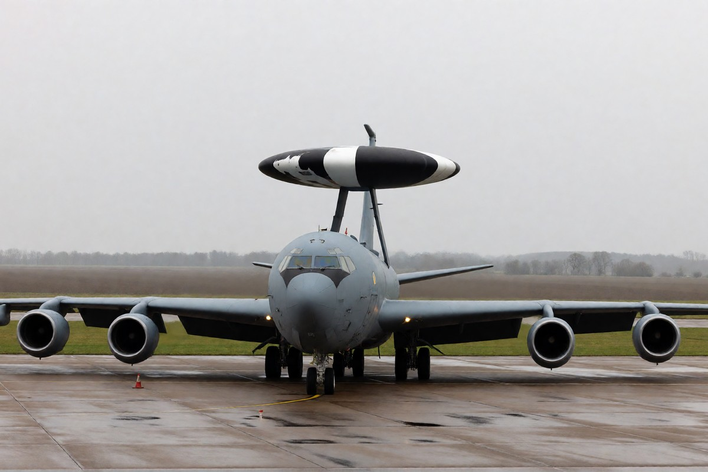

Geopolitica · 23 novembre 2026
Tre missili russi caduti in Polonia, la Nato manda un aereo radar

La procura di Lublino ha stabilito che gli oggetti caduti il 20 novembre erano missili da crociera Kh-101. Varsavia parla di provocazione intenzionale e chiede più difese: per ora ha ottenuto un velivolo di sorveglianza.
di Franco Zanghì
Venerdì 20 novembre 2026, durante un attacco russo su larga scala contro l'Ucraina occidentale, la difesa aerea polacca ha seguito 11 oggetti giudicati potenzialmente minacciosi. Tre sono entrati nello spazio aereo della Polonia e sono caduti nel sud-est del Paese, non lontano dal confine ucraino: a Nowy Lipowiec, nel voivodato di Lublino, e a Rudnik nad Sanem e Mołodycz, in Precarpazia. Sono rimasti in cielo polacco per circa tre minuti. Non ci sono stati feriti né danni a infrastrutture.
All'inizio si pensava a due missili e a un drone. Domenica 22 novembre la procura regionale di Lublino ha stabilito che in tutti e tre i punti ci sono rottami di missili da crociera russi del modello Kh-101. Gli accertamenti preliminari li datano al quarto trimestre del 2026, cioè a poche settimane prima, e li riconducono agli stabilimenti di Dubna, nella regione di Mosca.
L'intercettazione che non c'è stata
Due caccia svedesi Gripen impegnati nella missione di polizia aerea della Nato avevano ricevuto l'autorizzazione condizionata ad aprire il fuoco dal centro operativo alleato di Uedem, in Germania. Non hanno sparato: per il maltempo i piloti non sono riusciti a identificare visivamente gli oggetti. Le regole della Nato chiedono l'identificazione a vista; la Polonia, da ottobre, consente ai propri mezzi di agire anche sui soli dati radar.
Le parole di Varsavia
Il primo ministro Donald Tusk ha detto che quanto è caduto «veniva dalla Russia», che «non sembra un incidente» e che «sembra che abbiamo a che fare con una provocazione intenzionale». Sulle esercitazioni militari in corso nella zona — l'esercitazione «Koalicja 26.2», con migliaia di soldati di undici Paesi europei al poligono di Nowa Dęba — Tusk si è tenuto al condizionale: la provocazione «potrebbe essere» legata al loro svolgimento. Il nesso più netto lo ha fatto il ministro della Difesa Władysław Kosiniak-Kamysz.
Un aereo radar, e il resto rinviato
Lunedì 23 novembre, su richiesta di Varsavia, si è riunito in seduta straordinaria il Consiglio Nord Atlantico a Bruxelles. La Polonia, rappresentata dal viceministro della Difesa Paweł Zalewski, non ha invocato l'articolo 4 del Trattato, come aveva fatto nel settembre 2025.
Al termine, la portavoce della Nato Allison Hart ha annunciato che il comandante supremo alleato in Europa, il generale Alexus Grynkewich, ha autorizzato il dispiegamento avanzato in Polonia di un aereo radar Awacs: il velivolo con il grande disco sulla schiena, che vede da lontano missili, droni e aerei. Hart ha parlato di «un incidente pericoloso» di cui «la Russia porta la piena responsabilità» e ha aggiunto che il comandante sta esaminando l'invio di altri mezzi.
Le altre richieste polacche — più caccia, altri velivoli di sorveglianza, più difese aeree a terra — restano in sospeso. Zalewski ha detto che saranno esaminate alla riunione dei ministri degli Esteri dell'Alleanza, in calendario a Bruxelles per il 2 dicembre.
Perché riguarda anche l'Italia
La Polonia è nella Nato, come l'Italia: un missile che cade là cade sul territorio dell'alleanza che difende anche noi, e quegli aerei radar sono dell'Alleanza, non di un singolo Paese. Un velivolo di sorveglianza è una risposta prudente: serve a vedere prima, non a colpire. Il passaggio da guardare è il 2 dicembre.
Quello che è successo dopo
Nella notte fra lunedì 23 e martedì 24 un drone russo è entrato in Polonia nella zona di Dorohusk, penetrando per una ventina di chilometri. Non è stato abbattuto per il rischio per i civili. Martedì l'ambasciatore russo a Varsavia, Georgy Mikhno, è stato convocato al ministero degli Esteri e ha ricevuto una nota di protesta: ha respinto «categoricamente» le accuse, parlando di «giudizi politici e supposizioni infondate». Il Cremlino, invece, non ha commentato.
Mercoledì 25 il ministro degli Esteri Radosław Sikorski ha detto che l'espulsione dell'ambasciatore è «una delle opzioni», ma che per ora non sarà perseguita. Sempre mercoledì, secondo Bloomberg, la Polonia ha chiesto agli alleati di valutare l'abbattimento dei missili russi sopra il territorio ucraino quando sono diretti verso Paesi della Nato: una richiesta che, per ora, non ha l'unanimità.
Fonti
- Notes from Poland, «Poland confirms three objects that struck its territory were all Russian missiles», 23 novembre 2026
- Notes from Poland, «Nato to send surveillance aircraft to Poland after Russian missile strikes», 24 novembre 2026
- Reuters, «Nato to send early warning system aircraft to Poland after missiles incident», 23 novembre 2026
- Stars and Stripes, «Nato authorizes Awacs deployment to Poland», 24 novembre 2026
- CBS News, «Russia war in Ukraine: Poland missiles, intentional provocation», 20 novembre 2026
- Nato, avviso stampa sulla riunione dei ministri degli Esteri del 2 dicembre 2026
- Notes from Poland, «Russia denies its missiles hit Poland», 25 novembre 2026
La prima versione ufficiale, del 20 e 21 novembre, parlava di due missili e un drone: è stata superata dall'accertamento della procura di Lublino del 22 novembre, che indica tre Kh-101. Sull'autorizzazione dell'aereo radar le fonti divergono: Reuters e la portavoce della Nato la attribuiscono al comandante supremo alleato, alcune testate polacche al Consiglio Nord Atlantico. La Nato non ha comunicato il modello del velivolo, la base di destinazione né la durata del dispiegamento. Il collegamento fra le richieste polacche ancora aperte e la data del 2 dicembre è un'inferenza: le fonti parlano genericamente della prossima riunione dei ministri degli Esteri. Non risulta accertato che i missili fossero diretti intenzionalmente sulla Polonia.